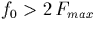
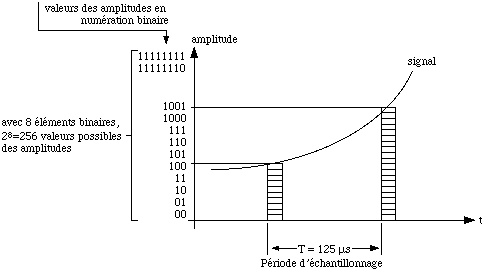
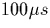
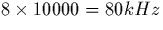
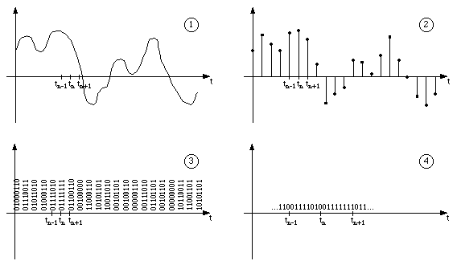

La thorie (thorme de Shannon) et l'exprience montrent que pour reconstituer correctement un signal form de frquences infrieures f, il suffit de disposer de la valeur de ce signal des instants suffisamment rapprochs (ces instants sont appels instants d'chantillonnage), carts au plus d'un temps T = 1/(2f), T tant la priode d'chantillonnage exprime en secondes. Si donc f0 est la frquence d'chantillonnage (f0 =1/T), il nous faut avoir dans notre cas

, o Fmax est comme prcdemment la frquence maximale normalise du signal de parole, savoir Fmax = 3400Hz.


. La valeur du rsultat de la mesure est ensuite traduite en informations susceptibles d'tre transmises en ligne et convenablement dtectes l'arrive. Le procd utilis dans notre cas, dnomm M.I.C. (modulation par impulsions codes), consiste traduire le rsultat de la mesure en numration binaire (cf figure 3.1). Avec, ici, une suite de 8 bits (donc 0 ou 1), on dispose de 28= 256 valeurs possibles d'amplitudes talons dont on retient celle qui se rapproche le plus possible de la valeur exacte mesure; une telle opration est ainsi appele quantification.En rsum, le signal tlphonique analogique d'une voie fait l'objet, la cadence de 10000 fois par seconde, de trois oprations: chantillonnage, quantification et codage, dont une est susceptible d'apporter une altration (bruit de quantification) du fait de l'approximation de la valeur relle par la valeur talon retenue pour l'amplitude (c'est d'ailleurs pour rduire cet inconvnient que le systme M.I.C. europen a t normalis avec 256 niveaux talons de quantification grce 8 bits de codage). La frquence de passage d'un mot de 8 bits un autre tant de 10kHz (frquence d'chantillonnage), celle de passage d'un bit un autre est:

, qui est donc la frquence d'horloge des botiers utiliss pour la maquette.
